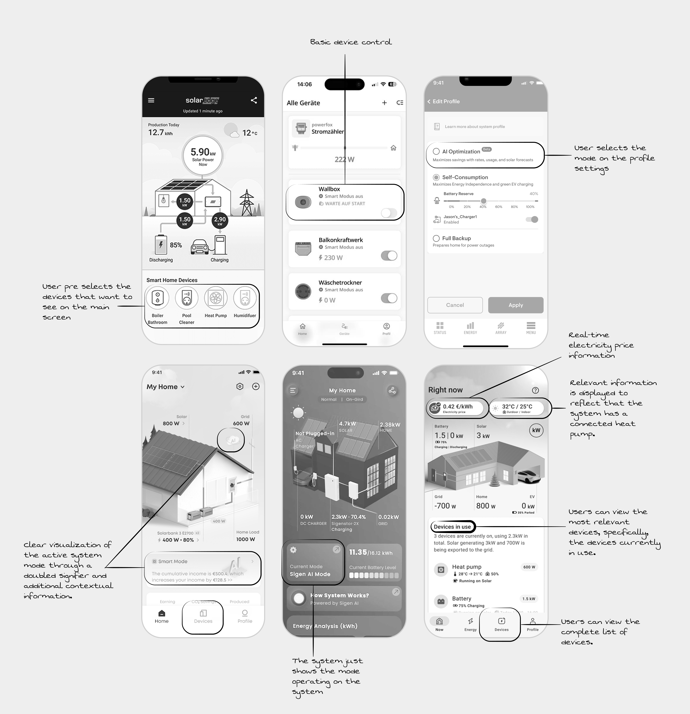
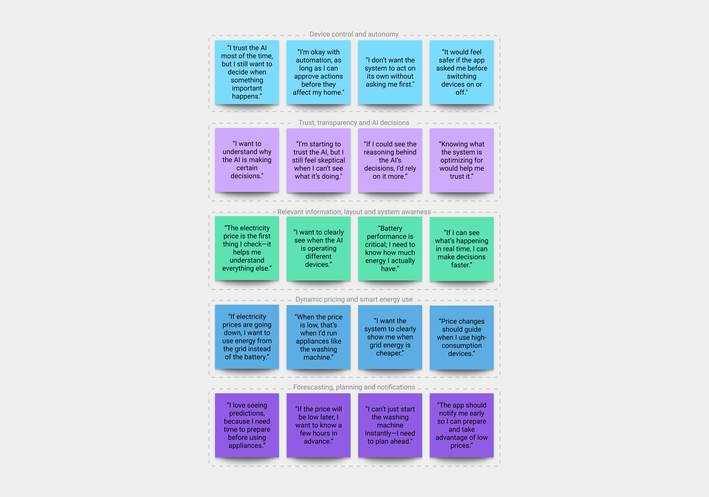
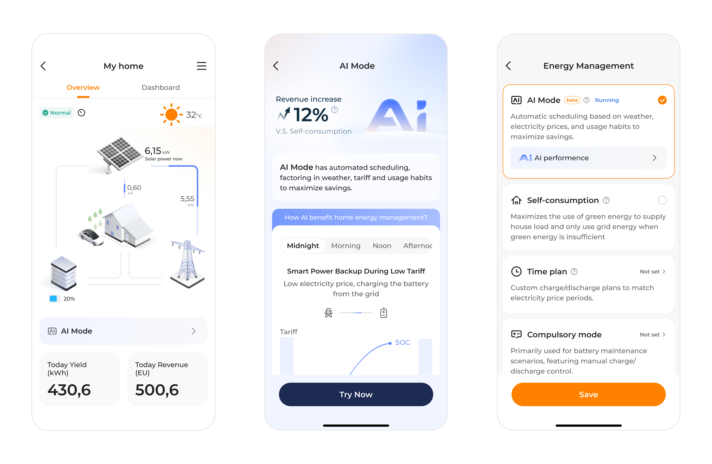
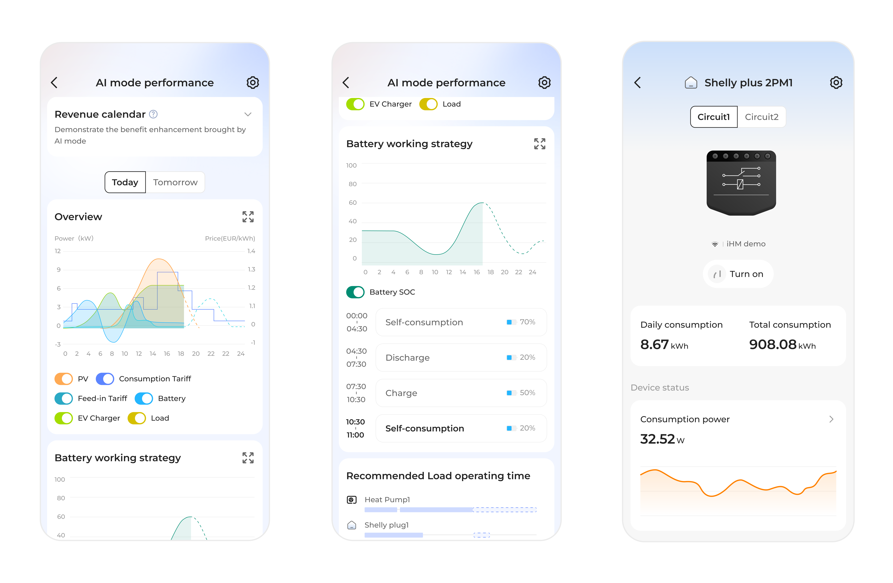
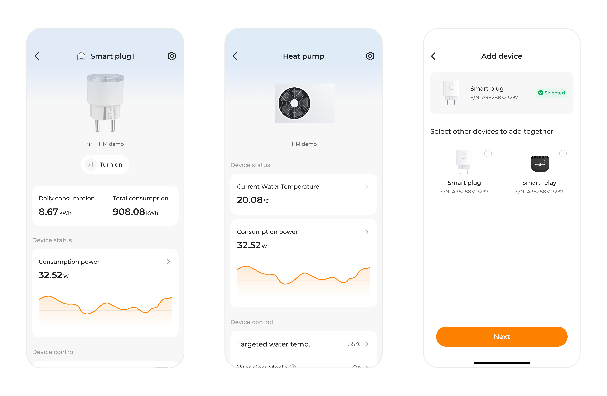
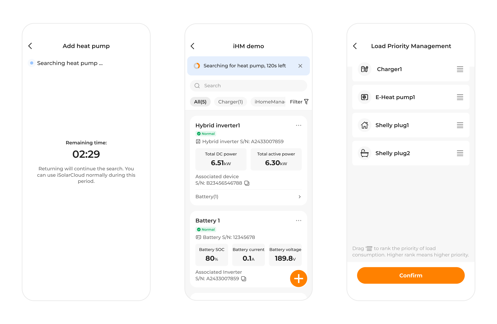
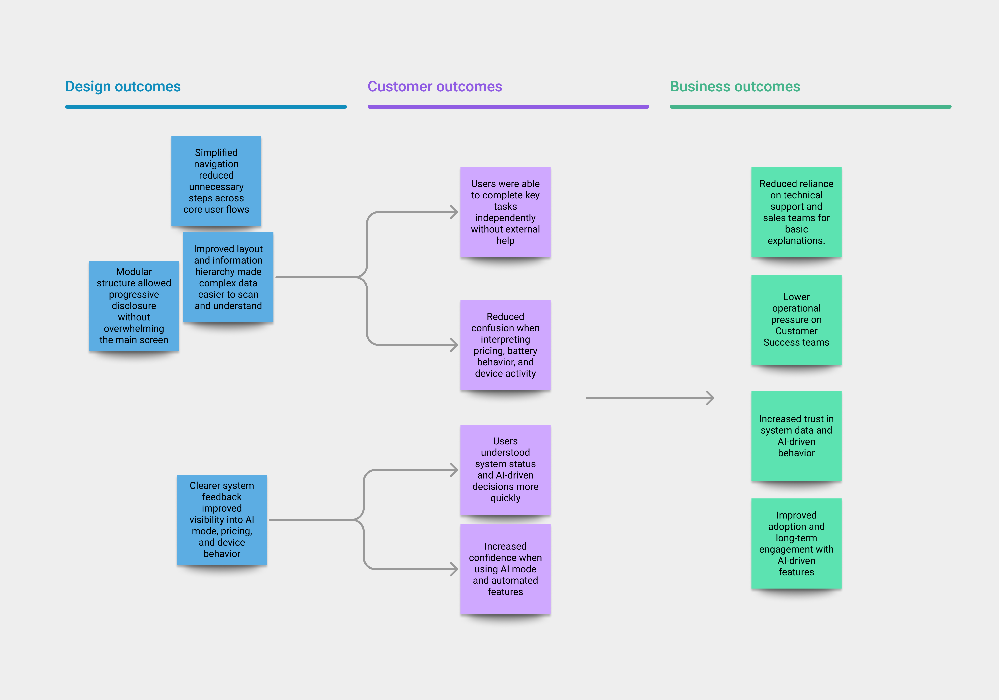

Case Study
iHomeManager: Iterating on an AI-driven energy management system
iHome Manager is an energy management system featuring a machine learning-powered AI Mode that optimizes how energy is generated, stored, and consumed across solar, battery, and grid systems.
The experience emphasizes transparent AI decisions, enabling users to confidently manage energy use while maintaining control over automated device behavior.

Overview
Challenge
Insights from Customer Success and Technical Sales showed that iHome Manager- AI Mode features were struggling due to usability and clarity issues in an AI-driven energy system.
Users found it difficult to understand system behavior, interpret AI decisions, and confidently manage energy across solar, battery, and grid sources. This led to increased cognitive load, reduced trust in automation, and greater reliance on support teams.
Goals
- Increase trust in AI-driven automation through clearer system behavior and explanations.
- Surface critical information such as pricing, system mode, and device activity at a glance.
- Enable user control over high-impact automated actions.
- Reduce friction in navigation and energy-related decision-making.
Purpose
To help users confidently understand, plan, and manage their energy use through transparent AI, clear system visibility, and meaningful user control, while reducing reliance on technical support.
UX audit

Most direct and indirect competitors display the active system mode on the main screen, but provide limited context around what the mode does or how it influences system behavior. While users can identify which mode is currently running, they are often left without a clear understanding of its impact on energy usage, device control, or automation logic.
To access deeper insights, such as decision reasoning or data influencing system behavior, users are typically required to navigate into mode configuration or profile flows. This adds unnecessary steps and increases cognitive effort when users are simply trying to understand what is happening in the moment.
Additionally, device-level information is frequently deprioritized on the main interface. As a result, users must rely on secondary screens to understand device activity, energy sources, and system status, increasing the risk of confusion and reducing overall system transparency.
User feedback and insights
User interviews and clustering
I conducted six user interviews to gather qualitative and quantitative insights using scenario-based tasks. Each session included three realistic scenarios with two tasks each, followed by short questions to capture task clarity and user sentiment.
The findings were synthesized into thematic insight groups that informed design requirements and prioritization.

Insights after clustering data
-
Device control & autonomy
Users expect human-in-the-loop control, especially for device-level actions. -
Trust, transparency & AI decisions
Trust grows when AI behavior is visible, explainable, and predictable. -
Relevant information, layout & system awareness
Users prioritize price, AI activity, and battery status to quickly understand system behavior. -
Dynamic pricing & smart energy use
Users actively adapt behavior based on dynamic tariffs and expect price-driven guidance. -
Forecasting, planning & proactive notifications
Users value energy forecasting and advance notifications to support planning and intentional energy use.
Aligning user needs, business goals and design decisions
Opportunity map
Insights from research and competitive analysis were structured into opportunity areas to identify where design could create the most impact. These opportunities informed solution exploration and experimentation before defining final design requirements.

Design requirements
After the opportunity map was created, a stakeholder alignment meeting was held, and the resulting insights were translated into the following design requirements.
-
AI System mode awareness
The active AI system mode must be clearly visible at all times, allowing users to understand how the system is currently operating and what level of automation is applied. -
Explainable AI and szstem behavior
The system must clearly communicate why specific actions are taken by AI mode, helping users understand, anticipate, and trust automated system behavior. -
User control over AI automation
Users must be able to influence AI-driven automation by approving, adjusting, or overriding system actions, particularly for high-impact device-level decisions. -
Comprenhensive system and device status
The system must provide accessible visibility into the PV system status, including battery strategy mode, energy consumption, charging and discharging state, connected device status, and primary device controls such as on/off. -
Clear energy pricing visibility
Electricity prices must be clearly displayed and easy to interpret, enabling users to understand how AI mode factors cost implications into its energy decisions and to make informed adjustments when needed.
Design iteration
The presented screens are the outcome of an iHomeManager-AI MODE feature design iteration focused on refining interaction patterns and visual structure. This iteration does not cover all design requirements, as some aspects were intentionally excluded to maintain scope and allow focused evaluation.
The design emerged from cross-team collaboration, incorporating feedback from product, engineering, and other stakeholders. The resulting interface reflects the design requirements addressed at this stage, including usability, information hierarchy, and alignment with existing design standards.




Measuring outcomes

To evaluate the impact of the design, outcomes were measured at two levels: user experience and business impact. This approach ensured that improvements addressed both usability and operational efficiency.
Costumer-Level outcome
The design was evaluated through usability testing, focusing on task performance, efficiency, and perceived ease of use.
Key UX indicators included:
- Task success rate: Users were able to complete core tasks.
- Time on task: Reduced time required.
- Perceived ease of use: Simple post-task questions were used to assess how easy users felt each task was to complete and how confident they felt in their actions.
Observed outcomes:
- Users completed key tasks with fewer steps and less hesitation.
- Users demonstrated a clearer understanding of system behavior and AI-driven decisions.
- Users reported higher confidence when interacting with AI mode and device controls.
Business-Level outcome
At a business level, the design focused on reducing dependency on support channels and increasing trust in the system.
Key business indicators included:
- Reduced need for technical support.
- Increased trust in system data: Improved clarity and transparency strengthened user confidence in the accuracy and reliability of the information presented.
Business impact:
- Users were better equipped to self-serve and manage their energy systems.
- Support teams could focus on higher-value activities rather than repeated explanations.
- Increased trust supported long-term adoption of AI-driven features.
Refinement and improvements
At the start of this iteration, the design was guided by a simple assumption: users would feel more comfortable with a highly minimal main screen that displayed only the most essential information. Early feedback supported this idea to some extent, but deeper review revealed a more nuanced reality. The real friction was not caused by too much information, but by how that information was organized and revealed over time.
As the complexity of the energy system became more apparent, it was clear that a single, static level of detail could not adequately support user needs. This led to a shift toward a modular interface strategy, one that keeps the primary experience clean and accessible, while allowing deeper layers of information to emerge when context and intent demand it.
This shift in approach surfaced several opportunities for refinement. One key area was the visibility of AI-driven modes: users needed clearer cues to understand how different data inputs influence system decisions and, in turn, their own energy behaviors. Another opportunity lay in timing, bringing forward the right information at the right moment to help users anticipate system actions and confidently make adjustments, rather than react after the fact.